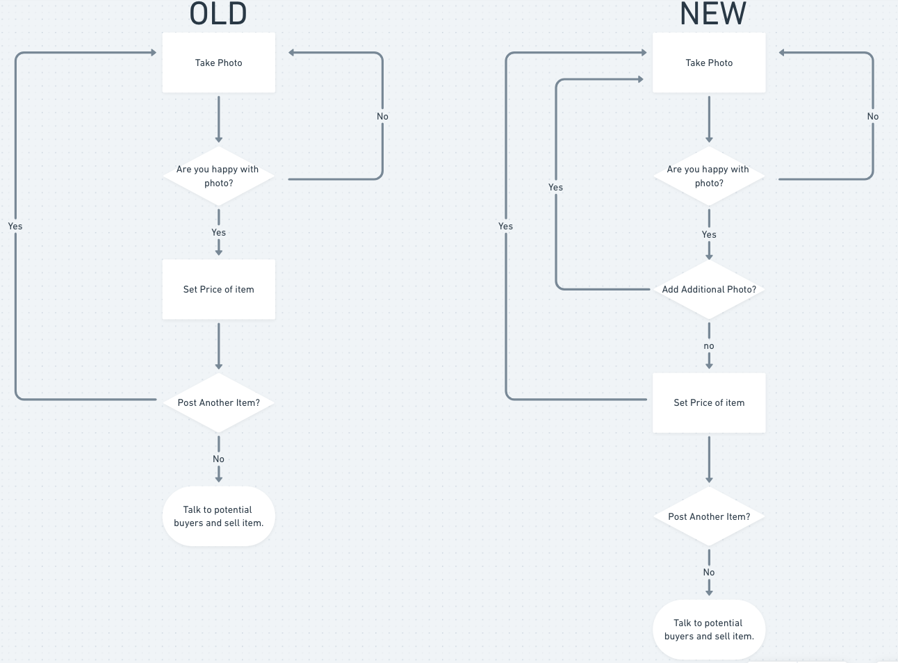

Insights:

Introduction:
The purpose of this project is to pick a application do user research on it, find the common pain points in the UI/UX and fix them. I choose to do my project on Letgo for Android because I could not decide on an app to do and happened to think of this application. It turned out to be a fun project.
LetGo is a free marketplace platform to buy and sell items locally. LetGo facilitates the trade of used goods. Letgo uses artificial intelligence and image recognition technology for listing the items. With almost a million downloads it’s a popular app for selling and buying things quickly.
After conducting user research I uncovered that there some issues that caused the user to have a lack of trust and uncomfort when using the app. My aim was to remove these issues and and replace it with a more trustworthy and improved user experience.
Using the Design thinking methodology:
Research:
For research I did Usability testing on 6 users who have not used the app before. This gave me a better understanding of how the user expects the application to work. With more time and resources I would be interested in doing a User/Jobs To Be Done interview to uncover even more pain points, but I’ll have to leave that for another day.
The plan was to make two scenarios for the user to attempt. I would then record and consolidate the research into insights/pain points. I initially wrote the task out with specific instructions/tasks which actually helps the user use the application and does not represent how they would use the app in the wild. By making the scenarios have more of a story flow it would be more natural and result with accurate data.
Buying a product
Objectives 1:
Scenario 1:
You want to find a macbook on this application for your parents/friends. Find a reasonable price (below 1600 reliable) and close by. Composite a list of potential sellers. When browsing you want to make sure there is plenty of information on the laptop before saving to your list. Also you want to make sure the seller is reliable and trustworthy. After making a list talk to the seller with the most appealing item.
Objectives 2:
Scenario 2:
You’re selling a wireless bluetooth mouse for your friend, you want to make sure potential buyers can see the bottom and top of the mouse.
After posting the mouse you want to add additional information
-5 buttons, infinite scroll ..etc
-Share listing on social media.
After sometime your friend buys the mouse off you and you want to stop advertising the mouse.
Key Findings:
When testing users on how they would go about buying a macbook or mouse on the letgo marketplace, there were a couple of minor pain points.
For the selling point of view:
When making the scenarios I tried my best to myself in the shoes of each user flow of selling and buying a item. In hindsight I definitely did not cover all of the use cases. One example of a missed use case: some people maybe just window shopping and just want to browse, with no specific purpose (so no comparative analysis). A solution for that would be to conduct more interviews and create more scenarios.
Ideate:
After conducting the interviews I listened and cringed at the questions, interactions and awkward moments I had with my cohorts and strangers. It was actually really helpful to listen to myself each time I refined my scenarios and questions I asked. I feel like by the last interview I had gotten my routine down and was less jittery. There is one small issue with that. Since my scenarios and questions mutated in each interview makes each interview inconsistent. We want little to no variability in our questions for accurate data.
I organized my findings and put them onto a “whiteboard” and made an affinity map.
Insights:
Affinity Maps:


As you can see there were some common pain points between the users from the Affinity map: Business and User map. There are also a few outliers which I decided were not a priority/wouldn’t have enough time to get to. There are also a few that I wasn’t sure what I was talking about so those are left outside of the map. This map was a little challenging because I wasn’t sure what the business goal was for Letgo. There were a few questionable UI/UX decisions that made it unclear to say it was not in Letgos interest. One example: The message icon at the bottom right is meant for sending a pre-made instant message that does not allow the user to customize. Is that what Letgo intended? Do they have data backing up this experience? Something I would like to ask them given the opportunity.
After mapping for the business and user I made another map with impact level and how easy it was to implement the changes. This was pretty easy for me to set up, I took the most common pain points ordered them according to highest impact and easiest to fix.
I made a task flow of each use case/scenario:
Here I was able to figure out where and how I would implement my changes and updates. Making the User Flows made it easy to visualize where the pain points were happening, understanding and solutionizing the problem.
For example when the user is selling an item a common question/pain point that was brought up was the option of adding another picture. I could clearly see that task was missing in the task flow. Here it is with the update:

Note: I would like to build out the complete ideal task flow and also show where the pain points are using a different colors.
Prototype:
Here is the current UI task flow for buying an item on Letgo:

Buying:
Some common pain points worth mentioning in the buying user flow. People commonly mistook the instant message icon as a location or bookmark action. Upon tapping it they were surprised that it sent an instant pre filled message to the seller. A snackbar pops up as an option to undo the message, but it was not really visible and they did not want to send the message in the first place 5/6 people found this uncomfortable.
When browsing for items and saving/bookmarking 4/6 users had little to medium trouble finding where their saved/bookmark posts were.
When looking for more information on a post 3/6 users had trouble finding more information on the post. There is a small button at the top “MORE INFO”
Note to self: Talk about category changes.
Selling:
small problem was taking a picture and then wanting to add another picture to the same post. In order for the seller to add another picture they would have to post the picture then go into profile settings and then edit the post in the SELLING tab. 6/7 people thought tap done thinking they were taking a picture for the same item when actually they were creating another post.
Here is the current UI task flow for selling an item on letgo:

Here is the updated UI user flow for buying:
I removed the instant message feature and replaced it with a bookmark icon and price display. This way the user can quickly browse through more content save any post quickly and refer back to it in their favorites/saved section.
(Expand on this)
In the updated UI I added Selling/Saved/Reviews/Sold into the hamburger menu instead of living in the profile section. And adding what is in the more info in the profile section on it’s own.
UI navbar top (Expand on this)
On the Item Post I made the more info more clear by giving it the primary cta color. When tapping on the more info button they will see a similar page to the current version, but with an section about the seller (that can be linked to their profile page) and verification info. 3/6 users had trouble finding out where they could find that info.
I also removed the instant pre filled message with a “message seller” option with a secondary color. Tapping that will open up an overlay with the item info given and a keyboard with a pre filled message, but it can still be edited.
Here is the updated UI user flow for selling:
(Categories adding tech Expand on this).
Instead of post option after taking a picture I added a “continue” button that will take them to additional page where they add more pictures edit the info (optional since there is ML/AI that gets information from the picture taken. Cool, right?). I also changed the display option for people who want to give away the item for free or negotiate the price. Instead of a toggle I switched it to a checkbox. Once the checkbox is checked it will grey out the price region.
Once the user is done they can tap the post button. A modal will pop up asking whether they would like to post another item or return to the main menu.